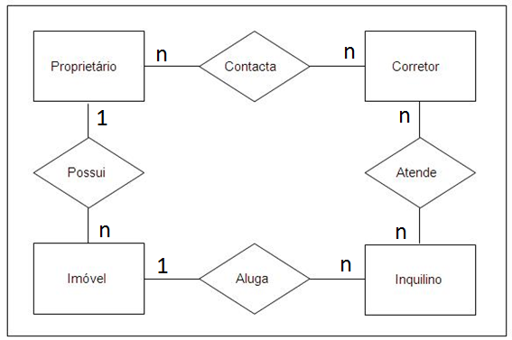

Conceito
1 - Conceito de Banco de Dados
A IMPORTÂNCIA DA INFORMAÇÃO
A informação é, para as empresas modernas, o principal recurso. É um insumo decisivo para as tarefas gerenciais.
Uma vez que os gerentes precisam de informação de alta qualidade para administrar a mudança em ambiente global turbulento,
muitas organizações estabeleceram sistemas de armazenagem e recuperação de dados – a matéria prima da informação.


O conceito de banco de dados
Banco de dados seria então uma coleção de dados persistentes referentes a um tema específico. A função dessa coleção é atender às necessidades de informação de seus usuários, sendo elas a de uma simples consulta ou a de geração de informações ou conhecimento.
Sistemas de arquivos
Banco de dados com modelo hierárquico
Banco de dados com modelo de rede
Banco de dados com modelo relacional
Bancos de dados com modelo orientado a objetos
Bancos de dados NOSQL
Bancos de dados NewSQL
A utilização dos modelos apresentados foi possível por meio da utilização de sistemas que facilitassem o acesso aos dados e fossem capazes de manipular essas informações, implementando as regras de cada modelo. Cada um desses sistemas é chamado de Sistema de Gerenciamento de Banco de Dados (SGBD).
SISTEMAS GERENCIADORES DE BANCO DE DADOS
Os SGBDs são um conjunto de serviços de software responsáveis por evitar problemas tais como redundância de dados, dificuldade nos acessos, isolamento de dados, problemas de integridade, problemas de atomicidade ou problemas com acesso concorrente. Para que os dados e as estruturas do banco de dados sejam manipulados, os SGBDs apresentam linguagens específicas para essas tarefas sendo a Structured Query Language (SQL) a mais utilizada nos dias de hoje para os bancos de dados relacionais. Alguns SGBD suportam o uso da linguagem java.
Linguagens de Bancos de dados
As linguagens podem ser divididas em duas partes diferentes: a linguagem de manipulação de dados e a linguagem de definição de dados.
A linguagem de manipulação de dados (DML) é a responsável por inserir, atualizar, excluir e recuperar os dados e as informações no banco de dados.
A linguagem de definição de dados (DDL) é utilizada para criar, modificar ou excluir a parte estrutural do banco de dados, incluindo as consistências necessárias para inserção de dados, permissões de acesso e implementação do esquema criado pelo projetista. O esquema do banco de dados é apenas uma parte do projeto do banco de dados.
O Projeto de um Banco de dados
Um projeto de banco de dados é composto de vários documentos que determinam projetos em diferentes níveis de visão.
O primeiro modelo é baseado na visão descritiva do negócio, que é a mais próxima do mundo real.
Esse documento busca trazer o maior número de informações e características para que as necessidades relatadas durante o levantamento
sejam satisfeitas.
O projeto de um banco de dados dependerá sempre da qualidade das informações resultantes da etapa de levantamento dos requisitos do sistema.
MODELAGEM DE DADOS
Qual o objetivo da modelagem de dados?
Por que modelar os dados do ambiente de negócios?
Representar os conceitos do ambiente de negócios observado
Documentar e normalizar os dados no modelo de dados
Fornecer processos de validação
Observar fatos no ambiente de negócios e identificar relacionamentos entre os objetos do ambiente de negócios.
Representar as regras de negócio que regulam os processos no ambiente de negócios
Administração de Dados
O objetivo principal da administração de dados é planejar, documentar, modelar, gerenciar e integrar os recursos de informação de uma empresa.
Esta integração pode ser alcançada através de uma combinação de perfis refinados e técnicas apropriadas, uso apropriado das ferramentas de Administração de Dados tais como um repositório de metadados e produtos de modelagem de dados, típicamente ferramentas CASE.
Duas abordagens são possíveis. Em ambos os casos, entretanto, os administradores de dados e os administradores de banco de dados cooperam estritamente no gerenciamento da organização dos dados:
BIBLIOGRAFIA COMPLEMENTAR
Modelagem de Dados, Peter Chen, Editora McGraw-Hill
Banco de dados. São Paulo: Érica, 2004. Machado, Filipe Nery Rodrigues. Projeto de Banco de Dados: uma visão prática. Editora Érica. São Paulo. 2002
Data Management : Banco de Dados e Organizações, Richard T. Watson, Editora LTC
INTRODUÇÃO
INTRODUÇÃO
Imagine um banco que se esquece de quem lhe deve dinheiro ou uma revista que perdeu os nomes e os endereços dos seus assinantes.
Em breve, estariam todos em grandes dificuldades, senão falidos.
Por isso, houve a necessidade de criar mecanismos para gerenciar esses dados, desde pequenas massas até grandes.
O gerenciamento de dados, exige habilidades em projeto, uso e gerenciamento dos sistemas de armazenamento de dados nas organizações modernas.
Para isso, desenvolvem-se aplicações (sistemas) informatizados que acessam esses dados, para que sejam incluídos, alterados, excluídos ou pesquisados.
O QUE SÃO DADOS
Dado é conjunto de símbolos “arranjados” a fim de representar a informação fora da mente humana. Um Elemento de Dado é o subconjunto de símbolos que compõem um dado. O dado em si não possui significado específico, não transmite conhecimento.
Exemplo :
O número de alunos matriculados na disciplina MATEMÁTICA no primeiro semestre de 2008 é igual a 57.
Quais são os elementos de dados??
Disciplina : MATEMÁTICA
Período : primeiro semestre de 2008
Matriculados : 57
Em conjunto, estes elementos nos fornece um dado porém sem significado pois não sabemos o que significa termos 57 alunos matriculados no primeiro semestre de 2008? Houve aumento do número de alunos? Houve evasão de alunos do curso naquele semestre? Qual o significado destes números?.
O QUE É INFORMAÇÃO
A informação pode ser entendida com o dado com significado, passível de interpretação e de entendimento por parte de quem o usa, enfim, é o dado capaz de transmitir conhecimento para a ação ou para a tomada de decisão.
AS CARACTERÍSTICAS DOS DADOS
Uma vez que percebemos a importância crítica dos dados para as empresas, podemos identificar algumas características desejáveis para esses dados:
Compartilhamento : Os dados devem poder ser compartilhados pelos diversos interessados, usuarios, departamentos e sistemas de informação
Disponibilidade : Os dados devem estar disponíveis para quem estiver interessado, seja para uma simples consulta ou relatório ou para uma análise detalhada feita por um tomador de decisão.
Segurança : Os dados precisam estar seguros, protegidos contra destruição, alteracao ou uso nãoautorizado.
Precisão : Os dados devem ser absolutamente confiáveis. Não deve haver dúvida quanto à precisão e veracidade dos dados armazenados
Atualizados : Os dados devem estar atualizados para que seja possível aà empresa aproveitar as oportunidades de negócio que possam surgir no mercado
DATABASE
CONCEITO DE BANCO DE DADOS
Banco de dados, (ou base de dados), é o conjunto de dados organizados de forma que façam sentido para o negocio. De forma que possam gerar informação.
Um banco de dados normalmente agrupa informações utilizadas para um mesmo tema.
Exemplo: Contabilidade, Pedidos, Cotação de Ações, Seguros, Vendas, Plano de Saúde, etc.
O objetivo principal de um sistema de banco de dados é possibilitar um ambiente que seja adequado e eficiente para uso na recuperação e armazenamento de informações.
Por exemplo: Um banco de dados de uma escola, teremos como informação:
- Os dados pessoais do aluno
- Os cursos oferecidos ou anos (antiga série)
- As turmas
- As disciplinas
- As notas
- Os professores
01 -SISTEMA GERENCIADOR DE BANCO DE DADOS ( SGBD )
É o conjunto de programas de computador, software, usado para a criação, administração e gerenciamento de um Banco de Dados. É responsável pelo gerenciamento de um Banco de Dados. Possui recursos e ferramentas para ajudar a gerenciar o acesso, a manipulação e a organização dos dados o que antes era feito pelos sistemas de informação. Existem diversos sistemas gerenciadores de banco de dados disponíveis no mercado, que atendem todos os tipos de bancos de dados ( hierárquico, rede, relacional e orientado à objetos ) e de todos os tamanhos desde bancos de dados desktop até bancos de dados corporativos. Um sistema gerenciador de banco de dados é projetado para ser a interface entre o banco de dados e os usuários e sistemas de informação que consulta e atualizam informações, servindo como uma interface. Para isso todo sistema gerenciador de banco de dados possui uma interface para permitir a comunicação com diversas aplicações que vão desde ferramentas de consulta do usuário final, componentes de sistemas de informação e web services.
02 -SISTEMA GERENCIADOR DE BANCO DE DADOS ( SGBD )
Um sistema gerenciador de banco de dados possui três componentes:
Linguagem de definição de dados (DDL do inglês Data Definition Language ) que especifica a estrutura dos objetos da base de dados e define os elementos de dados;
Linguagem de manipulação de dados (DML do inglês Data Manipulation Language ) que oferece comandos para consulta e atualização de dados na base;
Linguagem de Controle de Acesso aos Dados ( DCL do inglês Data Control Language ) que estabelece controle de acesso aos objetos do banco de dados e define os usuários e perfil de cada usuário do banco de dados.
03 -SISTEMA GERENCIADOR DE BANCO DE DADOS ( SGBD )
Características de um Sistema Gerenciador de Banco de Dados
Independência de Dados - A definição dos dados está é mantida pelo SGBD e não pelas aplicações que acessam o banco de dados;
Restrições de Integridade - A definição de mecanismos para garantir a integridade dos dados armazenados;
Segurança/Privacidade - Todo o acesso ao banco de dados é controlado pelo SGBD que possui mecanismos para autenticação dos usuários e controle de acesso aos objetos do banco de dados;
Restauração e Backup - Possui utilitários para restauração e backup dos dados de forma automática, através de agendamento ou via comando pelo DBA;
Reorganização de Dados - Possui recursos para reorganizar a estrutura, distribuição e particionamento dos dados do banco de dados;
Linguagem Não Procedural - Possui uma linguagem não procedural para operações de DML, DDL e DCL. O SQL é o padrão deste tipo de linguagem para bancos de dados relacionais;
Recuperação de Dados - Possui recursos para recuperação do estado do banco de dados a partir de um log de transações mantido pelo SGBD.
Principais Objetos de um Sistema Gerenciador de Banco de Dados
Esquema
Tabelas
Visões
Índices
Usuários e Papéis
Procedimentos Armazenados ( Stored Procedures, Functions e Triggers )
ESTRUTURA DE UM BANCO DE DADOS
Esquema
Tabelas
Visões
Índices
Usuários e Papéis
Procedimentos Armazenados ( Stored Procedures, Functions e Triggers )
Tabelas (ou entidades ou relação)
Nos modelos de base de dados relacionais, uma tabela é um conjunto de dados com um número determinado de colunas (ou campos) e um número infinito de linhas (ou registros ou tuplas).
Um banco de dados é composto de uma ou mais tabelas (podemos chamar também de entidades),
que uma forma comum de armazenagem de dados na empresa. O correto é que, através de um processo de modelagem de dados bem feito, todos os dados necessários ao negócio fiquem organizados nestas tabelas. A criação de cada tabela de um banco de dados, deverá ser feita com coerência e verificando o “assunto” que cada tabela irá armazenar.
Cada tabela deve armazenar dados relacionados com apenas um assunto ou conceito do negócio.
Colunas (ou atributos)
Cada tabela possui colunas (ou podemos chamar campos), que são os nomes dos dados que serão armazenados.
Cada coluna representa uma informação ou atributo da linha.
Cada campo (ou atributo) possuem propriedades, como por exemplo o tipo de dados a ser
armazenado (caracter, numérico, data), se é de preenchimento obrigatório e o tamanho.
Linhas (ou tuplas ou ocorrência de entidade)
As tabelas (ou entidades) também possuem linhas (ou tuplas) que são os registros contendo dados que estão armazenados em cada campo da tabela.
Então podemos dizer que tabela (ou entidade) é:
– Um objeto criado para armazenar os dados fisicamente
– Os dados são armazenados em linhas (tuplas) e colunas (atributos)
– Os dados de uma tabela normalmente descrevem um único assunto tal como
clientes, vendas, produtos, curso, aluno, disciplina, bilhete, filme, cinema, sessão, viagem, hotel, voo, etc.
PROJETO
Projeto de Banco de Dados
Um projeto de banco de dados é caracterizado por um processo que possui fases distintas e com aspectos
diferentes mas que tem como objetivo final a implementação de um banco de dados que atenda as necessidades
de informação do usuário e aos requisitos não funcionais de disponibilidade, desempenho e confiabilidade esperados.
As Três fases que fazem parte de um projeto de banco de dados:
1 - Modelo conceitual
2 - Modelo Lógico
3 - Modelo Físico
1 - Modelo conceitual
Representa os conceitos do negócio e as associações existentes entre estes conceitos. Também são representados os atributos assim como as regras de negócio que regulam as associações e conceitos do negócio. Este modelo é independente da tecnologia de implementação usada para o banco de dados e por isto é a etapa mais adequada para o envolvimento do usuário que não precisa ter conhecimentos técnicos.
As características principais deste modelo são :
· Visão Geral do negócio
· Facilidade de entendimento entre usuários e desenvolvedores
· Possui somente as entidades, relacionamentos e atributos principais
Os principais produtos da fase de projeto conceitual são:
O diagrama de entidade e relacionamentos, também conhecido por modelo de entidade relacionamentos;
Lista de Regras de Restrição de Integridade.
2- Modelo Lógico
Representa as estruturas de dados a serem implementadas e suas características considerando os limites impostos pelo modelo de dados usado para implementação do banco de dados. (banco de dados hierárquico , banco de dados de rede, banco de dados relacional ,etc.). As características principais deste modelo são:
· É derivado do modelo conceitual
· Possui entidades associativas em lugar de relacionamentos n:m
· Define as chaves primárias das entidades
· Define as chaves estrangeiras entre as entidades
· Normalização até a 3a. forma normal
· Adequado ao padrão de nomenclatura adotado pela empresa
· As Entidades e atributos são documentados em um Dicionário de Dados
O principal produto da fase de projeto lógico é o modelo relacional.
3- Modelo Físico
Este modelo representa a implementação do modelo lógico considerando algum tipo particular de tecnologia de banco de dados e os requisitos não funcionais ( desempenho, disponibilidade, segurança) que foram identificados pelo analista de requisitos. As características principais deste modelo são :
· Elaborado a partir do modelo lógico
· Pode variar segundo a tecnologia usada para implementação do banco de dados
· Possui tabelas físicas (log , lider , etc.)
· Possui colunas físicas (replicação)
No modelo físico, a linguagem SQL (Structured Query Language), é a linguagem padrão para definição,
manipulação e controle de uso das estruturas de dados.
Existem muitos Sistemas Gerenciadores de Banco de Dados disponíveis no mercado. Como exemplo,
podemos citar o PostgreSQL e o MySQL, que tem código aberto e são gratuitos.
Também existe o Oracle, DB2, Sybase SQL Server, Informix e Microsoft SQL Server, que são pagos e não possuem código aberto, sendo bastante usados em corporações.
Sistemas de Gerenciamento de Bancos de Dados - SGBDs
Como vimos na aula passada, o SGBD é um software responsável pelo armazenamento e gerenciamento de grandes volumes de dados estruturados de acordo com o modelo de dados implementado pelo SGBD e com recursos para acesso e atualização das informações.
Vantagens:
Rapidez na manipulação e no acesso à informação;
Redução do esforço humano (desenvolvimento e utilização);
Disponibilização da informação no tempo necessário;
Distribuição de informações geograficamente;
Controle de redundância e de inconsistência de informações;
Compartilhamento de dados;
Aplicação automática de restrições de integridade;
Controle de acesso e segurança dos dados;
Redução de problemas de integridade.
DICIONÁRIO DE DADOS
Definição:
Um dicionário de dados é um documento que descreve as informações representadas no modelo de dados, descrevendo informações de suas entidades e seus atributos ( tamanho, tipos de dado, obrigatoriedade e definição ).
Quando uma organização constrói um dicionário de dados de dimensão empresarial, o intuito deve ser o de padronizar precisamente definições semânticas a serem adotadas na empresa toda; portanto, ele deve incluir tanto definições semânticas como de representação para elementos de dados, sendo que os componentes semânticos focam na criação precisa do significado dos elementos de dados, e de outro lado, as definições de representação indicam como os elementos de dados são armazenados em uma estrutura de computador de acordo com seu tipo, ou seja, se são dados do tipo inteiro, caracter ou formato de data.
DICIONÁRIO DE DADOS - MODELO

Tipos de Dados:
Os dados podem assumir vários tipos de dados, que irão variar dependendo do Sistema de Gerenciamento de Banco de dados que estiver em uso pela empresa: Abaixo seguem alguns tipos:
char: Caracter (string de valor fixo): O valor armazenado é uma string.
Varchar: Caracter (string de valor variável): O valor armazenado é uma string.
integer: Número inteiro é o tipo padrão e o tamanho do conjunto que pode ser representado.
float: Número em ponto flutuante de precisão simples. São conhecidos normalmente como
Números reais.
double: Número em ponto flutuante de precisão dupla
· Date: Tipo data
EXEMPLO DE UM PROJETO DE BANCO DE DADOS
Para que um projeto de banco de dados seja bem sucedido, são necessárias diversas etapas.
Etapas no projeto de um Banco de dados:
- Determinar qual o objetivo do projeto de Banco de Dados:
- Determinar as Entidades necessárias:
- Determinar os Atributos de cada Entidade:
- Determinar o identificador de cada Entidade
- Determinar os Relacionamentos:
- Normalizar a Estrutura do Banco de Dados:
As formas normais
O Processo de normalização aplica uma série de regras sobre as tabelas de um banco de dados, para verificar se estas estão corretamente projetadas. Embora existam cinco formas normais (ou regras de normalização),
na prática usamos um conjunto de três Formas Normais.
Vejamos as três primeiras formas normais do processo de normalização de dados.
Primeira Forma Normal (1FN)
Segunda Forma Normal (2FN)
Terceira Forma Normal (3FN)
Apesar de existir outras formas normais como a quarta forma normal e quinta forma normal, apenas as três primeiras tem sido considerada atualmente. As formas normais são importantes instrumentos para resolver antecipadamente problemas na estrutura do banco de dados.
Primeira Forma Normal (1FN)
Esta regra define as regras de organização básica de um banco de dados, que são: Eliminar as colunas duplicadas de uma mesma tabela; Criar tabelas separadas para cada grupo de dados relacionados e identificar cada linha com uma ou mais colunas como únicas (IDs, Códigos, etc). Ou seja, todos os atributos da relação estiverem baseados em um domínio simples, não contendo grupos ou valores repetidos; Em resumo, esta 1FN faz com que cada atributo (coluna) tenha uma relação atômica (trabalhar de forma indivisível), ou seja, cada coluna deve ter apenas um valor e cada registro tenha as mesmas colunas.
Primeira Forma Normal (1FN)
Segunda Forma Normal (2FN)
Nesta forma, são definidas as regras para remover dados duplicados: Estar na 1FN; Cada atributo não-chave for dependente da chave primária inteira, isto é, cada atributo não-chave não poderá ser dependente de apenas parte da chave. Ou seja, todos os seus atributos que não façam parte de alguma chave candidata devem ser determinados unicamente por qualquer chave candidata da tabela;
Segunda Forma Normal (2FN)
Terceira Forma Normal (3FN)
Normalmente, quando alguns desenvolvedores ou arquitetos de BD normalizam seu banco, chegam até esta forma e para por aqui mesmo. Neste passo, iremos um pouco mais a fundo: Estar na 2FN; Eliminar as colunas que não possuem dependência funcional com as chaves primárias. todos os atributos que não são chave sejam mutuamente independentes, isto é, que não existam funções que definam um ao outro. Portanto, sempre a chave por inteiro deve definir toda a tabela;
Terceira Forma Normal (3FN)

Quarta e Quinta Forma Normal (4FN e 5FN)

MER
MER - Modelo Entidade e Relacionamentos
Start -> levantamento dos requisitos necessários
Durante essa análise, identifica-se as principais partes e objetos envolvidos, suas possíveis ações e responsabilidades, suas características e como elas interagem entre si.
A partir das informações obtidas, pode-se desenvolver um modelo conceitual que será utilizado para orientar o desenvolvimento propriamente dito, fornecendo informações sobre os aspectos relacionados ao domínio do projeto em questão.
O Modelo Entidade Relacionamento (também chamado Modelo ER, ou simplesmente MER),
como o nome sugere, é um modelo conceitual utilizado na Engenharia de Software para descrever os objetos (entidades) envolvidos em um domínio de negócios, com suas características (atributos) e como elas se relacionam entre si (relacionamentos).
MER - Modelo Entidade e Relacionamentos
Observação: nem sempre criaremos modelos para um sistema completo, pois isso poderia resultar em um modelo muito extenso e difícil de interpretar.
MER - Entidades
Os objetos ou partes envolvidas um domínio, também chamados de entidades, podem ser classificados como físicos ou lógicos, de acordo sua existência no mundo real. Entidades físicas: são aquelas realmente tangíveis, existentes e visíveis no mundo real, como um cliente (uma pessoa, uma empresa) ou um produto (um carro, um computador, uma roupa). Já as entidades lógicas são aquelas que existem geralmente em decorrência da interação entre ou com entidades físicas, que fazem sentido dentro de um certo domínio de negócios, mas que no mundo externo/real não são objetos físicos (que ocupam lugar no espaço). São exemplos disso uma venda ou uma classificação de um objeto (modelo, espécie, função de um usuário do sistema).
MER - Entidades
As entidades são nomeadas com substantivos concretos ou abstratos que representem de forma clara sua função dentro do domínio. Exemplos práticos de entidades comuns em vários sistemas são Cliente, Produto, Venda, Turma, Função, entre outros. Podemos classificar as entidades segundo o motivo de sua existência:
MER -> Entidades -> Entidades fortes
Entidades Fortes:
são aquelas cuja existência independe de outras entidades, ou seja, por si só elas já possuem total sentido de existir. Em um sistema de vendas, a entidade produto, por exemplo, independe de quaisquer outras para existir.
MER -> Entidades -> Entidades Fracas
Entidades Fracas:
ao contrário das entidades fortes, as fracas são aquelas que dependem de outras entidades para existirem, pois individualmente elas não fazem sentido. Mantendo o mesmo exemplo, a entidade venda depende da entidade produto, pois uma venda sem itens não tem sentido.
MER -> Entidades -> Associativas
Entidades Associativas:
esse tipo de entidade surge quando há a necessidade de associar uma entidade a um relacionamento existente. Na modelagem Entidade-Relacionamento não é possível que um relacionamento seja associado a uma entidade, então tornamos esse relacionamento uma entidade associativa
MER -> Relacionamentos
Uma vez que as entidades são identificadas, deve-se então definir como se dá o relacionamento entre elas. De acordo com a quantidade de objetos envolvidos em cada lado do relacionamento, podemos classifica-los de três formas:
MER -> Relacionamento 1..1 (um para um)
Relacionamento 1..1 (um para um): cada uma das duas entidades envolvidas referenciam obrigatoriamente apenas uma unidade da outra. Por exemplo, em um banco de dados de currículos, cada usuário cadastrado pode possuir apenas um currículo na base, ao mesmo tempo em que cada currículo só pertence a um único usuário cadastrado.
MER -> Relacionamento 1..n ou 1..* (um para muitos)
Relacionamento 1..n ou 1..* (um para muitos): uma das entidades envolvidas pode referenciar várias unidades da outra, porém, do outro lado cada uma das várias unidades referenciadas só pode estar ligada uma unidade da outra entidade. Por exemplo, em um sistema de plano de saúde, um usuário pode ter vários dependentes, mas cada dependente só pode estar ligado a um usuário principal. Note que temos apenas duas entidades envolvidas: usuário e dependente. O que muda é a quantidade de unidades/exemplares envolvidas de cada lado.
MER -> Relacionamento n..n ou *..* (muitos para muitos)
Relacionamento n..n ou *..* (muitos para muitos): neste tipo de relacionamento cada entidade, de ambos os lados, podem referenciar múltiplas unidades da outra. Por exemplo, em um sistema de biblioteca, um título pode ser escrito por vários autores, ao mesmo tempo em que um autor pode escrever vários títulos. Assim, um objeto do tipo autor pode referenciar múltiplos objetos do tipo título, e vice versa.
MER -> Auto-Relacionamentos
Um outro exemplo que podemos representar seria o de uma entidade PESSOA que possui PAI. Ora o pai de uma pessoae a própria pessoa são ocorrencias da mesma entidade PESSOA, portanto temos um relacionamento entre ocorrencias da mesma entidade PESSOA que seriam as ocorrencias da pessoa, do pai. A representação desta situação seria feita da seguinte forma:.
Observe que a cardinalidade do auto-relacionamento indica opcionalidade visto que a PESSOA pode nao ter pai conhecido ou ter somente um pai.
Os auto-relacionamentos podem possuir qualquer tipo de cardinalidade.
MER -> Auto-Relacionamentos
É importante observar que nessa caso a forma de representação é a mesma pois se trata da entidade PRODUTO que mantem um relacionamento COMPOSIÇÂO com ela mesma, sendo que a única alteração é com respeito à cardinalidade deste relacionamento que é muitos para muitos.
Segue abaixo exemplo de como seria representado este auto-relacionamento.
Os auto-relacionamentos são muito usados para representar hierarquias e composições de elementos do mundo real que são ocorrencias em uma mesma entidade.
A forma de representação é simples sendo que devemos ter especial atenção a cardinalidade do auto-relacionamento..

MER -> Relacionamento -> Observação
Os relacionamentos em geral são nomeados com verbos ou expressões que representam a forma como as entidades interagem, ou a ação que uma exerce sobre a outra. Essa nomenclatura pode variar de acordo com a direção em que se lê o relacionamento. Por exemplo: um autor escreve vários livros, enquanto um livro é escrito por vários autores.
MER -> Atributos
Atributos são as características que descrevem cada entidade dentro do domínio. Por exemplo, um cliente possui nome, endereço e telefone. Durante a análise de requisitos, são identificados os atributos relevantes de cada entidade naquele contexto, de forma a manter o modelo o mais simples possível e consequentemente armazenar apenas as informações que serão úteis futuramente. Uma pessoa possui atributos pessoais como cor dos olhos, altura e peso, mas para um sistema que funcionará em um supermercado, por exemplo, estas informações dificilmente serão relevantes. Os atributos podem ser classificados quanto à sua função da seguinte forma:
MER -> Atributos -> classificão
Descritivos: representam característica intrínsecas de uma entidade, tais como nome ou cor.
Nominativos: além de serem também descritivos, estes têm a função de definir e identificar um objeto. Nome, código, número são exemplos de atributos nominativos.
Referenciais: representam a ligação de uma entidade com outra em um relacionamento. Por exemplo, uma venda possui o CPF do cliente, que a relaciona com a entidade cliente.
Quanto à sua estrutura, podemos ainda classificá-los como:
Simples: um único atributo define uma característica da entidade. Exemplos: nome, peso.
Compostos: para definir uma informação da entidade, são usados vários atributos.
Por exemplo, o endereço pode ser composto por rua, número, bairro, etc.
MER -> Chave Primária
Alguns atributos representam valores únicos que identificam a entidade dentro do domínio e não podem se repetir.
Em um cadastro de clientes, por exemplo, esse atributo poderia ser o CPF. A estes chamamos de Chave Primária.
MER -> Chave Estrangeira
Já os atributos referenciais são chamados de Chave Estrangeira e geralmente estão ligados à chave primária da outra entidade. Estes termos são bastante comuns no contexto de bancos de dados. Mantendo o exemplo anterior, a entidade cliente tem como chave primária seu CPF, assim, a venda possui também um campo “CPF do cliente” que se relaciona com o campo CPF da entidade cliente.
DER
DER -> Diagrama Entidade Relacionamento
Enquanto o MER é um modelo conceitual, o Diagrama Entidade Relacionamento (Diagrama ER ou ainda DER) é a sua representação gráfica e principal ferramenta. Em situações práticas, o diagrama é tido muitas vezes como sinônimo de modelo, uma vez que sem uma forma de visualizar as informações, o modelo pode ficar abstrato demais para auxiliar no desenvolvimento do sistema. Dessa forma, quando se está modelando um domínio, o mais comum é já criar sua representação gráfica, seguindo algumas regras.
DER -> Notação Original
Em sua notação original, proposta por Peter Chen (idealizador do modelo e do diagrama), as entidades deveriam ser representadas por retângulos, seus atributos por elipses e os relacionamentos por losangos, ligados às entidades por linhas, contendo também sua cardinalidade (1..1, 1..n ou n..n)
DER -> Diagrama Entidade Relacionamento
Exemplo simples de um diagrama para um sistema de imobiliárias.

DER -> Cardinalidade

DER -> Cardinalidade de uma forma mais completa

DER -> Diagrama Entidade Relacionamento
No diagrama anterior, lemos os relacionamentos da seguinte forma:
1 ou 1 grupo possui 0 ou muitos produtos. Como de um lado temos “1 ou 1”, isso equivale a apenas “1”, pois não temos várias possibilidades. Já do lado do produto, indicamos que um grupo pode possuir nenhum produto, mas também pode possuir vários.
0 ou várias vendas contém 1 ou muitos produtos. Ou seja, um produto pode nunca ser vendido (0 vendas) como também pode ser vendido várias vezes (n vendas). Já uma venda deve conter 1 ou vários produtos, pois uma venda não pode estar vazia (0 produtos)
DER -> Os atributos
Os atributos, como já foi dito, podem aparecer no diagrama na forma de elipses ligadas às entidades. Essa foi a notação original proposta, mas como podemos ver na Figura 4, ela deixa o diagrama com muitos itens e pode atrapalhar um pouco a organização destes.

DER -> Diagrama Entidade Relacionamento
Em uma notação mais atual, comumente utilizada na UML, os atributos aparecem listados dentro do próprio retângulo da entidade, enquanto o nome da entidade aparece no topo na forma de título.

DER -> Ferramentas CASE
Do inglês Computer-Aided Software Engineering, as chamadas ferramentas CASE são aquelas baseadas em computadores (softwares) utilizadas na Engenharia de Software para auxílio nas atividades desde análise de requisitos até ,modelagem de dados
No contexto desse artigo, as ferramentas CASE permitem a criação de diagramas de forma simples em um ambiente de fácil utilização e com recursos para incluir as principais regras de composição dos diagramas. Exemplos comuns desse tipo de ferramenta são: Star UML, Astah e ERwin Data Modeler. Na Figura 6 vemos um exemplo de diagrama sendo construído no Astah.
DER -> BR Modelo

DER -> DB Designer4
DER -> Enterprise Architect -Pay
DDL
Scroll Down Last 7
DML
Scroll Down Last 8
TCL
Scroll Down Last 9
ALGEBRA RELACIONAL
Scroll Down Last 10
PLSQL
Possiveis Projeto e Ideias
Minha biblioteca
Aviso minha escola
meu calendario - interligado com o da escola
minha materia
wiki escola
Pais Digitais
Eu Posso te ajudar
Minhas Disciplinas
GEO - Minha Escola
Minha Escola 360º - 3D
Meus Podcast
Projeto Integrador - APP pronta usar pra ajudar no estudo
Quanto minha escola investiu em nós.
Projeto conhecer Escolas 2018
Projeto Transporte Coletivo 2018
Mapa Papelaria 2018
BI - Evolução escolar desde 2010(Projeto DashBoard).